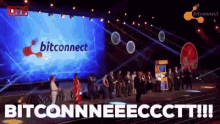

<html>
	<head>
		<title>Pacman Demo</title>
      	<meta charset="utf-8">
		<link rel="stylesheet" type="text/css" href="pman.css">
	</head>
	<body>
		<div id="world"></div>
		<div id="scorebox"></div>
		<div id="bitconnect_bonus"></div>
		<!--  -->

		<script>

			var world = [];
			var topWall = [0,0,0,0,0,0,0,0,0,0,0,0,0,0,0,0,0,0,0,0,0,0,0,0,0,0,0,0,0];
			var vals = [1, 1, 1, 1, 1, 1, 1, 1, 1, 0, 0];
			var score = 0;
			var bonus_img = "";
			var count = 0;
			var pacman = {
				x: 1,
				y: 1,
			};
			var cherry = {
				x: 5,
				y: 5
			};
			var direction = "pacman_right"

			//initialize gameboard with random wall blocks in middle as obstacles (not a maze though, and pacman can get trapped)
			function start(){
				var i = 20;
				world.push(topWall)
				while(i > 0){
					var wall = [];
					for(var x = 0; x < topWall.length; x++){
						if(x == 0 || x == topWall.length -1){
							wall.push(0);
						}
						else{
							var rand = vals[Math.floor(Math.random() * vals.length)];
							wall.push(rand);
						}
					}
					world.push(wall);
					i--;
				}
				world.push(topWall);
			}
			

			
			//displays score on webpage
			function setScore(){
				document.getElementById('scorebox').innerHTML = "<h2>Bitcoin wallet: "+score+"</h2>"

			}


			//creates cherry to display for cycles of 20 onkeydown events --attempt to keep within gameboard does not always succeed
			function makeCherry(){
				if(count == 10){
					cherry.y = Math.ceil(Math.random() * world.length);
					if(cherry.y == 0 || cherry.y >= world.length -2){
						makeCherry()
					}
					cherry.x = Math.ceil(Math.random() * topWall.length);
					if(cherry.x == 0 || cherry.x >= topWall.length - 2){
						makeCherry()
					}
					world[cherry.y][cherry.x] = 4;
				}
				if(count > 30){
					count = 0;
					world[cherry.y][cherry.x] = 2;
				}
				count++
			}


			//displays world according to the world 2D array
			function displayWorld(){
				world[pacman.y][pacman.x] = 3
				var output = '';
				for(var i = 0; i < world.length; i++){
					output+="\n<div class='row'>";
					for(var j=0; j < world[i].length; j++){
						if(world[i][j] == 0){
							output+="\n\t<div class='brick'></div>";
						}
						else if(world[i][j] == 1){
							output+="\n\t<div class='coin'></div>";
						}
						else if(world[i][j] == 2){
							output+="\n\t<div class='empty'></div>";
						}
						else if(world[i][j] == 3){
							output+="\n\t<div class='"+direction+"'></div>";
						}
						else if(world[i][j] == 4){
							output+="\n\t<div class='cherry'></div>";
						}
					}
					output+="\n</div>";
				}
				document.getElementById('world').innerHTML = output;
				setScore()
				makeCherry();
			}


			//shows bonus to webpage as a gif, does not always work. unclear why
			function bonus(){
				bonus_img += "\n\t"
				document.getElementById('bitconnect_bonus').innerHTML = bonus_img;
			}


			//directs pacman, sets score, redraws world, resets to empty square once visited, calls bonus to alert player, displays directional pacman (uncertain why gif only does 1 cycle for up, left, and down)
			document.onkeydown = function(e){
				if(e.keyCode == 37){
					if(world[pacman.y][pacman.x-1] != 0){
						if(world[pacman.y][pacman.x-1] == 1){
							score++;
						}
						else if(world[pacman.y][pacman.x-1] == 4){
							score+=50;
							bonus();
						}
						world[pacman.y][pacman.x] = 2;
						pacman.x--;
					}
					direction = "pacman_left"
				}
				else if(e.keyCode == 38){
					if(world[pacman.y-1][pacman.x] != 0){
						if(world[pacman.y-1][pacman.x] == 1){
							score++;
						}
						else if(world[pacman.y-1][pacman.x] == 4){
							score+=50;
							bonus();
						}
						world[pacman.y][pacman.x] = 2;
						pacman.y--;
					}
					direction = "pacman_up"
				}
				else if(e.keyCode == 39){
					if(world[pacman.y][pacman.x + 1] != 0){
						if(world[pacman.y][pacman.x+1] == 1){
							score++;
						}
						else if(world[pacman.y][pacman.x+1] == 1){
							score+=50;
							bonus();
						}
						world[pacman.y][pacman.x] = 2;
						pacman.x++;
					}
					direction = "pacman_right"
				}
				else if(e.keyCode == 40){
					if(world[pacman.y+1][pacman.x] != 0){
						if(world[pacman.y+1][pacman.x] == 1){
							score++;
						}
						else if(world[pacman.y+1][pacman.x] == 4){
							score+=50;
							bonus();
						}
						world[pacman.y][pacman.x] = 2;
						pacman.y++;
					}
					direction = "pacman_down"
				}


				displayWorld();
				setScore();
			}
			


			//run these 2 functions to make certain that new visitor or a page refresh displays gameboard w/out needing to push button
			start()
			displayWorld()
		</script>
	</body>
</html>